Write-off bad debts - Uneconomical to recover
When does Bad debts become uneconomical to collect?
Determining when bad debts become uneconomical to collect depends on various factors and may vary based on individual circumstances and business practices. Here are some common indicators that may suggest bad debts are uneconomical to collect:
- Length of delinquency: If a debt has been outstanding for an extended period without any progress in collection efforts or communication from the debtor, it could indicate that it is becoming increasingly difficult to recover the amount.
- Lack of debtor communication: When debtors consistently ignore attempts to contact them or fail to provide viable repayment plans, it may signal that collecting the debt is unlikely.
- Financial hardship: If the debtor is experiencing significant financial difficulties, such as bankruptcy or insolvency, it may make it impractical to pursue the debt further.
- Insufficient assets or resources: If the debtor lacks sufficient assets or income to satisfy the debt, it may be economically unfeasible to continue collection efforts.
- Cost-benefit analysis: Assessing the costs associated with further collection efforts, such as legal fees, time, and resources, against the potential recovery amount can help determine if it is uneconomical to continue pursuing the debt.
It's important to note that the determination of uneconomical debts is subjective and may vary among businesses. Establishing clear internal policies and guidelines, and consulting with accounting professionals or legal advisors, can help in making informed decisions regarding the write-off of bad debts.
Write-off bad debts which is uneconomical to collect for multiple debtor accounts
In osFinancials you may generate multiple entries in a journal to list all the debtor account balances which is less than a specified amount.
In osFinancials, you have the capability to generate multiple entries in a journal to list all debtor account balances that are less than a specified amount. This functionality is particularly useful for identifying and dealing with bad debts that are considered uneconomical to collect.
By generating multiple entries in a journal for debtor accounts with balances below a specified amount, you can effectively identify and isolate bad debts that are uneconomical to collect. This enables you to have a clear overview of these accounts and take appropriate actions, such as writing off the debts or pursuing alternative debt recovery methods.
Decide on the threshold amount below which debtor account balances will be considered uneconomical to collect. For example, you may choose $100 as the threshold.
Procedure to write-off bad debts multiple debtor accounts:
- In osFinancials navigate to the Default ribbon.
- Select "Batch entry" and choose the "General journal" option.
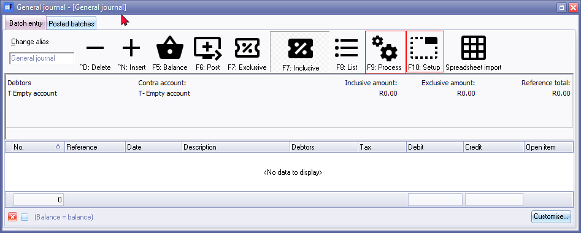
- Batch setup: Since this is a general journal that may be used for other general transactions, click F10: Setup to set the "Options for this bath" as follows:
- Standard tab - "Contra account" select the "Bad debts" expense account.
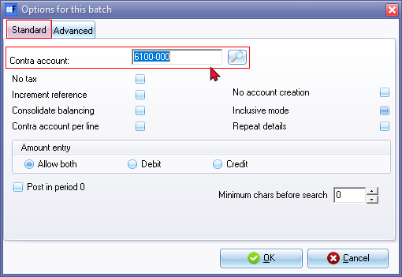
- Advanced tab - Select the following options:
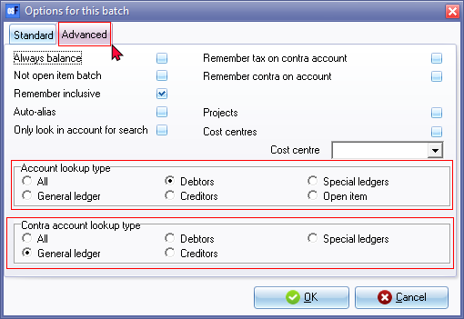
- Account lookup type - Select "Debtors" to only list the debtor accounts in the lookup.
- Contra account lookup type - Select "General ledger" to only list the general ledger account as the contra account for the balancing entries or transactions.
- Leave the rest of the settings as in the options for this batch as in the screenshots, and click OK to save your settings.
- On the batch entry screen, go to the F9: Process icon and select the "Generate multiple transactions" option on the "Process the batch" screen.
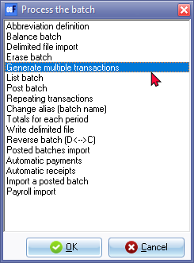
- Click OK.
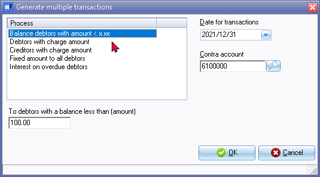
- On the "Generate multiple transactions" screen the default option "Balance debtors with amount < x.xx" is selected. On this option, select the following:
- Date for transactions: The date of your operating system will be displayed. Select the date on which you need to write off the bad debts which is uneconomical to recover. Note: In this example the date is the last date in the accounting period or financial year e.g. "31 December 2021" if you need to to include in your financial reporting and statements for the year ending on "31 December 2021".
- Contra account: Select the contra account for the "Bad debts" expense account. This contra account is not used, but the contra account selected on the F10: Setup - "Options for this batch" on the Standard tab.
- To debtors with a balance less than (amount): Specify the amount (e.g., $100.00) for debtor accounts with balances less than or equal to that amount.
- Click OK. All debtor accounts with outstanding balances of $100.00 or less, will be imported into the general journal as on the selected date.
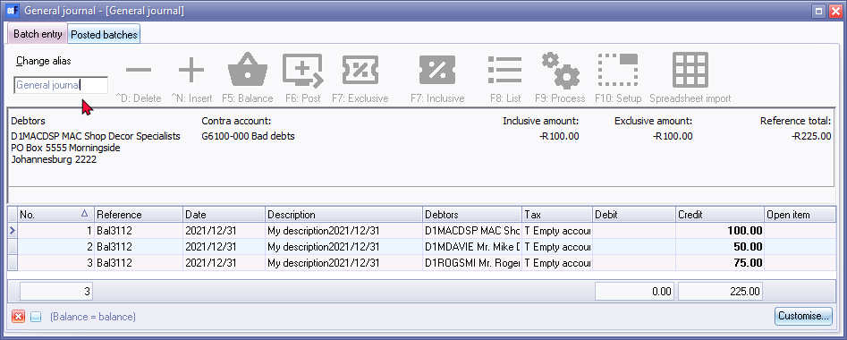
- After importing the multiple transactions of debtors in the "General journal", The icons in the speed bar options will be inactive. Close the "General journal" and relaunch the batch to activate these options.
- Edit the "General journal" for the imported transactions:
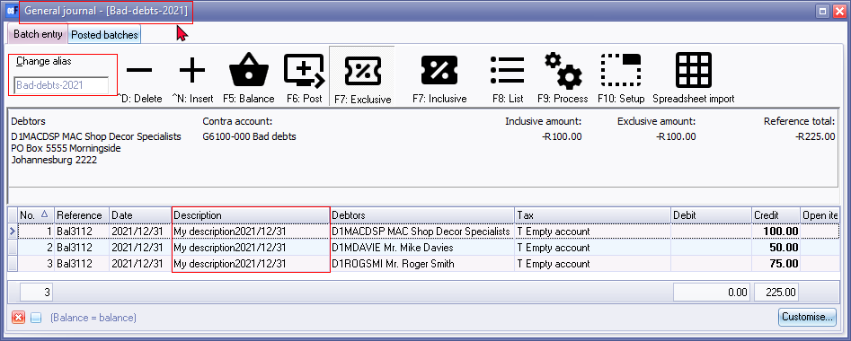
- Change alias: By default the name of the journal is displayed as "General journal - [General journal]" To make it easy to identify the specific nature of the transactions in the General journal, enter a unique name for your specific requirements, in the "Change alias field" and press Enter. In this example the "Bad debts-2021" was entered. This will change the general journals name as name of the journal is displayed as "General journal - [Bad debts-2021]" in the titlebar It indicates that "Bad debts for 2021" was processed in the general journal.
- Description: The default description for each transaction, is "My description2021/03/31" Change this with a description for your own requirements. In this example, the description is changed to "Uneconomical-write-off-bad-debts-2021/12/31" Note: The descriptions should make sense to understand the nature of the transactions.
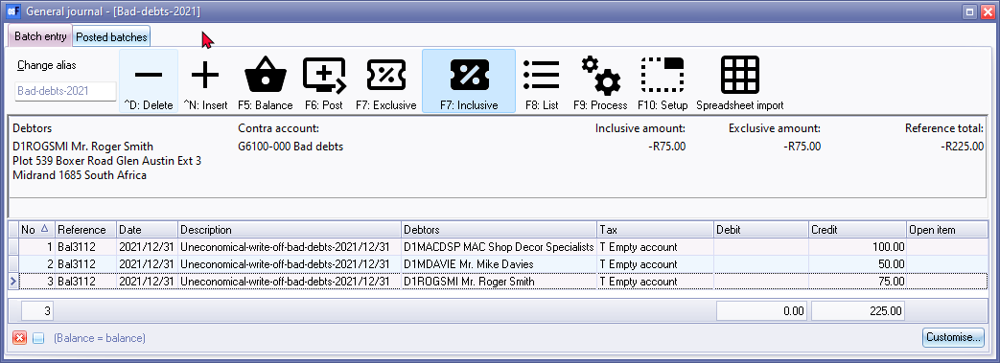
- Edit / Delete transactions: Edit the imported transactions, ensuring that you do not write off debtor accounts with small outstanding balances that are likely to be recovered through normal business processes. Delete any transactions that should not be written off.
|
|
VAT/GST/Sales tax - Writing off of bad debts: It is important to note that the specific tax rules and regulations regarding bad debt write-offs can vary, and it's advisable to consult with a tax professional or refer to the tax laws in your jurisdiction to determine the exact requirements and treatment of VAT/GST/Sales tax in relation to writing off uneconomical bad debts. If VAT/GST/Sales tax is applicable on the writing off of bad debts that are uneconomical to recover, you can follow the steps below to ensure proper recording and allocation of the tax:
By following these steps, you can ensure that the VAT/GST/Sales tax implications of writing off bad debts are properly accounted for and reflected in your financial records and tax returns. |

- Once you have edited your transactions, you need to finalize the batch:
- Balance the batch: Click F5: Balance to generate the balancing transactions to the contra account.
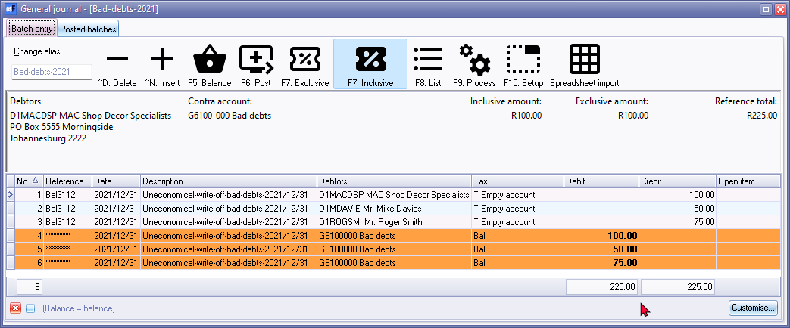
- List the batch: Click F8: List to print a list of the unposted batch transactions in the batch. Review the list for any errors or discrepancies and make necessary edits before proceeding. This list may be retained for record and audit purposes.
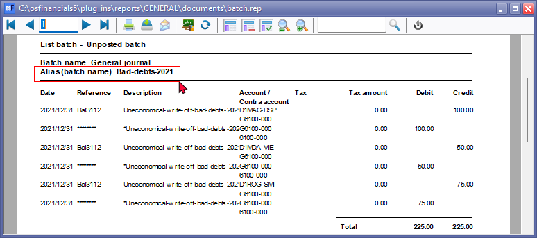
- Post the batch: Click F6: Post to post or update the transactions in the batch.
|
|
Disable debtor accounts - After processing and writing off bad debts that are uneconomical to recover, and considering them to be a credit risk, you have the option to disable their debtor account. By selecting the "Account disabled" option on the Accounting information tab, you can prevent any further processing and posting of transactions for that specific debtor. By setting a debtor account as inactive or disabling it, you ensure that no additional transactions can be processed or posted for that particular debtor. This helps in managing credit risks and preventing additional financial exposure. It's important to note that all existing transactions and historical data related to the debtor will still be available in reports and other relevant areas of the osFinancials system. Disabling debtor accounts provides an effective way to control credit risks and manage your accounts receivable effectively. By keeping inactive debtor accounts separate from active ones, you can easily identify and focus on those accounts that require attention or further action. Please exercise caution when disabling debtor accounts and ensure that it aligns with your internal policies and procedures. Additionally, consider any legal or regulatory requirements that may affect the management and retention of debtor information. |
Transactions in the ledger
The transactions is updated in all respective accounts and will be available in all reports for the accounts for the Debtor accounts and in the Bad debts expense account. These totals of the accounts will be reflected in the Trial balance in the Ledger analyser. The Debtors control account will reflect the transactions in the Balance sheet. The "Bad debts" expense account will be reflected on the Income statement.
T-Account viewer
In any of these report types in the Ledger analyser, you may double-click on an account or right-click and select the "Show details" option on the context menu. This will launch the T-Account viewer with the transaction details. You may print the transactions or export the transactions to a spreadsheet. An example of the transactions is as follows:
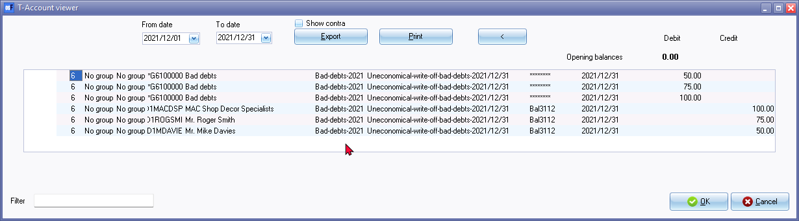
The T-Account viewer allows you to view transaction details for specific accounts. You can access it by double-clicking on an account or right-clicking and selecting the "Show details" option. In the T-Account viewer, you can double-click on the batch number, account code, or date to filter transactions.
Contra transactions are indicated by eight asterisks (********). The "Show contra" option displays the contra transactions. When printing the transactions the contra accounts will not be printed.
When exporting the transactions to a spreadsheet, the contra accounts will be included in column "A" if the "Contra account" option is selected.
Click on the Print button to print the transactions in the T-Account viewer.
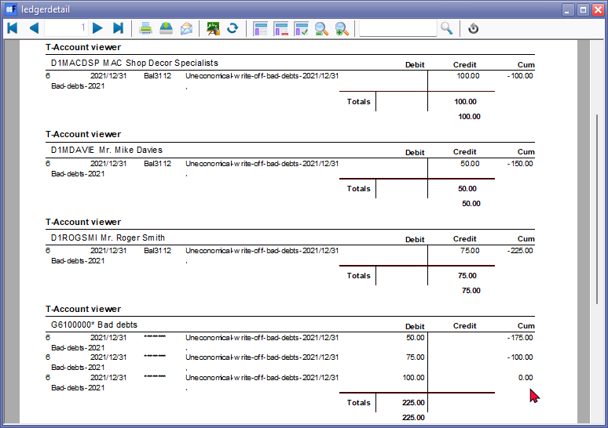
|
|
In addition to launching the T-Account viewer from the Ledger analyser options, the T-Account viewer may also be launched separately on the Reports ribbon; or from the following options on the Default ribbon:
By utilising the T-Account viewer and the reports in the Ledger Analyser, you can gain a detailed understanding of the transactions and their impact on the accounts involved. |